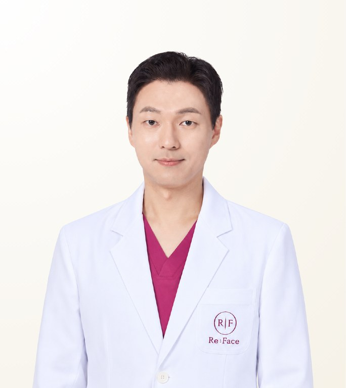

Reviewed by STMSTYLE
Kim Do-Sup
คิม โดซอบ · 김도섭
Reface Dental Hospital · Board-certified Oral & Maxillofacial Surgeon
- 3D Orthognathic Surgery
- Revision Orthognathic Surgery
- Three-Part Facial Contouring
- Experience
- Oral & maxillofacial surgery training since 2012 · board-certified since 2016 · clinical professor, Konkuk University Hospital, 2018–2025
- Clinical experience
- 2,000+ orthognathic, contouring and revision cases
- Recommended Stay
- For orthognathic surgery: 4–5 working days from pre-operative examination to surgery, then at least 1 week after surgery before flying home (2–3 weeks recommended)
About the Doctor
Dr. Kim Do-Sup is a board-certified oral and maxillofacial surgeon and director of Reface Dental Hospital in Seoul, known for 3D orthognathic (double-jaw) surgery, revision orthognathic surgery and three-part facial contouring. Board-certified since 2016, he served as a clinical professor at the Konkuk University Hospital Orthognathic Surgery Centre from 2018 to 2025 and has performed more than 2,000 orthognathic, contouring and revision cases. He plans function and facial appearance together, using 3D simulation and segmental osteotomy.
Case Expertise
3D Orthognathic Surgery
Occlusion, jaw position and facial proportion are designed in advance through 3D simulation before the upper and lower jaws are moved together. Segmental osteotomy is applied according to the person’s skeletal condition to raise functional precision.
Revision Orthognathic Surgery
Corrects occlusal problems, asymmetry or unwanted facial change remaining after previous orthognathic surgery. Whether to revise, and to what extent, is judged by comparing the present problem with the result the person originally expected.
Three-Part Facial Contouring
Zygoma reduction, mandibular angle reduction and genioplasty are performed together to refine the facial line. Whether this is combined with orthognathic surgery is decided from the balance of the whole face.
Other treatments available
Materials & Equipment
Video
Philosophy of Care
Function and facial change are considered together, but the surgical plan is built around what the person values most. The scope of orthognathic and facial contouring surgery, and whether they are carried out at the same time, are decided from the balance of the whole face and from experience with previous cases. Revision is judged carefully by comparing the present problem with the result the person originally expected. Functional precision is raised through 3D simulation and a range of segmental osteotomy plans, and a surgical process that reduces pain and swelling, together with continuing aftercare, is treated as essential.
— Kim Do-Sup
STMSTYLE Assessment
STMSTYLE regards Dr. Kim Do-Sup as a surgeon who considers function and facial change together and builds the surgical plan around what the person values most. In orthognathic, contouring and revision surgery he assesses the balance of the whole face alongside the state of any previous surgery, and places weight on 3D simulation and detailed planning. Based on actual collaboration and referrals for care, STMSTYLE considers him a surgeon to recommend first for people considering complex orthognathic surgery, facial contouring or revision surgery.
STMSTYLECareer & Training
View full background
Education
- Graduate, Kyung Hee University School of Dentistry (professional graduate programme)
- Doctoral coursework completed, Graduate School of Dentistry, Kyung Hee University
Licences & certification
- Board-certified Oral & Maxillofacial Surgeon 2016
Career
- Director, Reface Dental Hospital
- Former Clinical Professor, Dentistry and Orthognathic Surgery Centre, Konkuk University Hospital 2018.01–2025.02
- Internship and Residency in Oral & Maxillofacial Surgery, Kyung Hee University Dental Hospital 2012–2015
Frequently Asked Questions
Is Dr. Kim Do-Sup experienced in revision orthognathic surgery?
Yes. Dr. Kim Do-Sup performs revision orthognathic surgery and high-complexity cases, correcting occlusal problems, asymmetry or unwanted facial change from previous surgery. He judges carefully whether and how far to revise by comparing the present problem with the result the person originally expected.
How does Dr. Kim Do-Sup plan orthognathic surgery?
Dr. Kim Do-Sup uses 3D simulation to design occlusion, jaw position and facial proportion in advance, and applies segmental osteotomy according to the person’s skeleton. He considers both function and facial appearance, centring the plan on what the person values most.
Can Dr. Kim Do-Sup combine jaw surgery with facial contouring?
Yes. Dr. Kim Do-Sup performs both orthognathic surgery and three-part contouring (zygoma, mandibular angle and chin), and decides from the balance of the whole face whether to do them at the same time. The final decision is made after examination and an in-person consultation.
How long should I stay in Korea for jaw surgery with Dr. Kim Do-Sup?
For orthognathic surgery with Dr. Kim Do-Sup, allow 4–5 working days from pre-operative examination to surgery, then at least 1 week after surgery before flying home, with 2–3 weeks recommended. The hospital's VIP care system supports swelling and pain management during recovery.
Does Dr. Kim Do-Sup perform the surgery personally, and how can I consult through STMSTYLE?
Surgery is performed by Dr. Kim Do-Sup himself under the hospital's one-to-one care system. STMSTYLE works directly with him and has referred people to him, coordinating from the first consultation in Bangkok or via WhatsApp through to scheduling at the hospital. The final plan and cost are confirmed after an in-person consultation.
Sources
View sources and review record
| Item | Source | Checked |
|---|---|---|
| Oral & maxillofacial surgery board certification (2016) and education | Reface Dental Hospital official website | 2026-08-27 |
| Training and career history (2012–2015, 2018–2025) | Hospital official profile and direct answers from Dr. Kim Do-Sup | 2026-08-27 |
| Introduction and consultation video | Hospital official YouTube channel | 2026-08-27 |
| Case numbers, philosophy of care and recommended stay | STMSTYLE direct review through meetings with the doctor, his direct answers and actual care coordination | 2026-08-27 |
Review record · 2026-08-27
STMSTYLE reviewed Dr. Kim Do-Sup's profile through long-term collaboration, in-person meetings, on-site visits and actual referrals for care, cross-checked against the hospital's official website, official video and the doctor's direct answers.